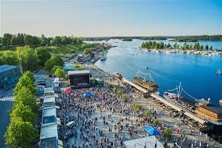

Matkailu

Lappeenranta Suomen rajakaupunkina tuo paljon mahdollisuuksia suomalaisille matkailuun. Lappeenrannasta on lyhyt matka Suomeen. Lappeenrannan naapurikaupunki, syystäkin syrjitty Imatra, muutti valtatie 6:n nelikaistaisen moottoritien rekkaparkeiksi kilpaillakseen Lappeenrannan kanssa.
Kilometrien pituinen rekkaparkki onkin ollut hyvin suosittu, sillä rekat on helppo ohittaa, koska toiselle kaistalle mahtuu rekat ja toisella voi ne ohittaa ja päästä Svetogorskiin nopeammin kuin Lappeenrannan kautta. Tästä syystä Lappeenrannan kaupunginhallitus suunnittelee varaavansa ensi vuoden budjetista tilaa ydinaseille.
Suosittu matkailukohde on ollut Lappeenrannan Kanavansuulta alkava Saimaan kanava, joka on maailman suurin vesiliukumäki. Lappeenrannassa on myös lentokenttä, jolla Wrightin veljekset 1900-luvun alussa heittelivät paperilennokkeja.
Liikenneyhteydet
Karjalan rata
Pendolinot liikennöivät Helsinkiin 442 km matkalla.
Valtatie 6
Venäläisten rekkajonojen valtaama päätie itään.
Lentoasema
Nopein vaihtoehto – kaljanhaku Saksaan tai seksilomat Latviaan.
Liikenneyhteyksiin kuulumaton matkailunähtävyys hiekkalinna kerää joka kesä useita tuhansia ihmisiä ihmettelemään isoa kasaa santaa, mistä on tehty poliitikkojen rintakuvia sokeiden riemuksi. Muuta toimivaa hiekkalaatikkoa ei sitten Lappeenrannasta tai sen metsistä enää löydetäkään.